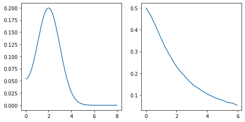
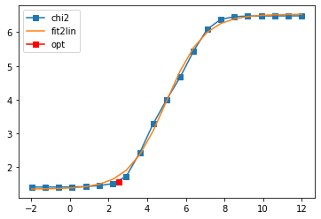
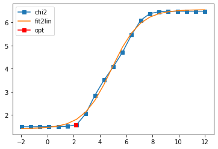
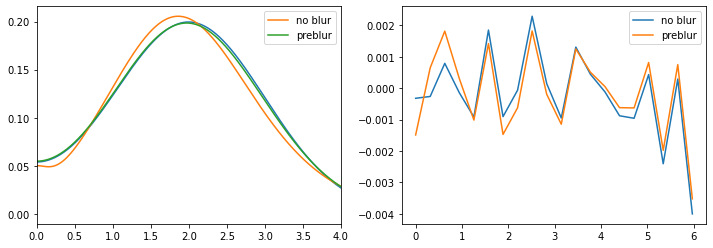

9. Preblur for bosonic continuation¶
Demo notebook that shows that preblur for bosonic functions is correctly implemented and has the desired effect.
[1]:
import sys, os
import numpy as np
import matplotlib.pyplot as plt
sys.path.insert(0, os.environ['HOME'] + '/Programs/ana_cont')
from ana_cont import continuation as cont
[2]:
nw_full = 801
w_full = np.linspace(0., 8., num=nw_full, endpoint=True)
spectrum = np.exp(-(w_full - 2.)**2 / 2.) + np.exp(-(w_full + 2.)**2 / 2.)
spectrum /= 2. * np.trapz(spectrum, w_full)
beta = 20.
niw = 20
wn = 2. * np.pi / beta * np.arange(niw)
with np.errstate(invalid="ignore"):
kernel = (w_full**2)[None, :] / ((w_full**2)[None, :] + (wn**2)[:, None])
kernel[0, 0] = 1.
chi_exact = np.trapz(kernel * spectrum, w_full, axis=1)
rng = np.random.RandomState(4712)
noise_unscaled = rng.randn(niw)
noise_amplitude = 1e-3
chi = chi_exact + noise_amplitude * noise_unscaled
fig, ax = plt.subplots(ncols=2, nrows=1, figsize=(8, 4))
ax[0].plot(w_full, spectrum)
ax[1].plot(wn, chi)
plt.show()

[3]:
nw = 801
w = np.linspace(0, 8., num=nw, endpoint=True)
probl = cont.AnalyticContinuationProblem(im_axis=wn, re_axis=w, im_data=chi, kernel_mode='freq_bosonic')
model = np.ones_like(w)
model /= np.trapz(model, w)
err = np.ones_like(wn) * noise_amplitude
[4]:
sol_noblur, _ = probl.solve(method='maxent_svd', alpha_determination='chi2kink', optimizer='newton',
stdev=err, model=model,
preblur=False, blur_width=0.01,
alpha_start=1e12, alpha_end=1e-2, alpha_div=5.,
interactive=True, fit_position=2.5)
sol_preblur, _ = probl.solve(method='maxent_svd', alpha_determination='chi2kink', optimizer='newton',
stdev=err, model=model,
preblur=True, blur_width=0.8,
alpha_start=1e12, alpha_end=1e-2, alpha_div=5.,
interactive=True, fit_position=2.5)
fig, ax = plt.subplots(ncols=2, nrows=1, figsize=(12, 4))
ax[0].plot(w_full, spectrum)
ax[0].plot(w, sol_noblur.A_opt, label='no blur')
ax[0].plot(w, sol_preblur.A_opt, label='preblur')
ax[0].legend()
ax[0].set_xlim(0., 4.)
ax[1].plot(wn, chi - sol_noblur.backtransform, label='no blur')
ax[1].plot(wn, chi - sol_preblur.backtransform, label='preblur')
ax[1].legend()
plt.show()
801 data points on real axis
20 data points on imaginary axis
16 significant singular values
Precomputation of coefficient matrices...
log10(alpha) = 12.00, chi2 = 3.044e+06, S = -1.304e-11, nfev = 1, norm = 1.000
log10(alpha) = 11.30, chi2 = 3.044e+06, S = -3.259e-10, nfev = 5, norm = 1.000
log10(alpha) = 10.60, chi2 = 3.043e+06, S = -8.145e-09, nfev = 7, norm = 1.000
log10(alpha) = 9.90, chi2 = 3.038e+06, S = -2.032e-07, nfev = 9, norm = 0.999
log10(alpha) = 9.20, chi2 = 3.012e+06, S = -5.027e-06, nfev = 12, norm = 0.997
log10(alpha) = 8.51, chi2 = 2.889e+06, S = -1.194e-04, nfev = 14, norm = 0.986
log10(alpha) = 7.81, chi2 = 2.391e+06, S = -2.365e-03, nfev = 16, norm = 0.936
log10(alpha) = 7.11, chi2 = 1.225e+06, S = -2.615e-02, nfev = 18, norm = 0.794
log10(alpha) = 6.41, chi2 = 2.801e+05, S = -1.073e-01, nfev = 19, norm = 0.604
log10(alpha) = 5.71, chi2 = 4.677e+04, S = -1.952e-01, nfev = 19, norm = 0.508
log10(alpha) = 5.01, chi2 = 1.016e+04, S = -2.678e-01, nfev = 19, norm = 0.507
log10(alpha) = 4.31, chi2 = 1.938e+03, S = -3.498e-01, nfev = 29, norm = 0.509
log10(alpha) = 3.61, chi2 = 2.674e+02, S = -4.294e-01, nfev = 30, norm = 0.502
log10(alpha) = 2.91, chi2 = 5.381e+01, S = -4.774e-01, nfev = 21, norm = 0.500
log10(alpha) = 2.21, chi2 = 3.279e+01, S = -5.016e-01, nfev = 21, norm = 0.499
log10(alpha) = 1.52, chi2 = 2.875e+01, S = -5.289e-01, nfev = 23, norm = 0.499
log10(alpha) = 0.82, chi2 = 2.682e+01, S = -5.940e-01, nfev = 25, norm = 0.499
log10(alpha) = 0.12, chi2 = 2.621e+01, S = -6.902e-01, nfev = 26, norm = 0.499
log10(alpha) = -0.58, chi2 = 2.604e+01, S = -8.330e-01, nfev = 28, norm = 0.499
log10(alpha) = -1.28, chi2 = 2.597e+01, S = -1.118e+00, nfev = 30, norm = 0.499
log10(alpha) = -1.98, chi2 = 2.595e+01, S = -1.509e+00, nfev = 32, norm = 0.499
Fit parameters [1.35524589 5.17828922 4.99108767 1.02207039]
Optimal log alpha 2.5450721793257154
log10(alpha) = 2.55, chi2 = 3.776e+01, S = -4.915e-01, nfev = 17, norm = 0.499

801 data points on real axis
20 data points on imaginary axis
13 significant singular values
Precomputation of coefficient matrices...
log10(alpha) = 12.00, chi2 = 3.059e+06, S = -1.293e-11, nfev = 1, norm = 1.000
log10(alpha) = 11.30, chi2 = 3.058e+06, S = -3.231e-10, nfev = 5, norm = 1.000
log10(alpha) = 10.60, chi2 = 3.057e+06, S = -8.075e-09, nfev = 7, norm = 1.000
log10(alpha) = 9.90, chi2 = 3.052e+06, S = -2.015e-07, nfev = 9, norm = 0.999
log10(alpha) = 9.20, chi2 = 3.027e+06, S = -4.984e-06, nfev = 12, norm = 0.997
log10(alpha) = 8.51, chi2 = 2.905e+06, S = -1.184e-04, nfev = 14, norm = 0.985
log10(alpha) = 7.81, chi2 = 2.409e+06, S = -2.352e-03, nfev = 16, norm = 0.936
log10(alpha) = 7.11, chi2 = 1.243e+06, S = -2.618e-02, nfev = 18, norm = 0.792
log10(alpha) = 6.41, chi2 = 2.884e+05, S = -1.082e-01, nfev = 19, norm = 0.598
log10(alpha) = 5.71, chi2 = 5.028e+04, S = -1.981e-01, nfev = 19, norm = 0.500
log10(alpha) = 5.01, chi2 = 1.194e+04, S = -2.746e-01, nfev = 19, norm = 0.504
log10(alpha) = 4.31, chi2 = 3.214e+03, S = -3.624e-01, nfev = 20, norm = 0.517
log10(alpha) = 3.61, chi2 = 7.017e+02, S = -4.926e-01, nfev = 21, norm = 0.511
log10(alpha) = 2.91, chi2 = 1.122e+02, S = -6.332e-01, nfev = 22, norm = 0.504
log10(alpha) = 2.21, chi2 = 3.749e+01, S = -7.160e-01, nfev = 21, norm = 0.500
log10(alpha) = 1.52, chi2 = 3.191e+01, S = -7.460e-01, nfev = 37, norm = 0.499
log10(alpha) = 0.82, chi2 = 3.129e+01, S = -7.662e-01, nfev = 25, norm = 0.499
log10(alpha) = 0.12, chi2 = 3.095e+01, S = -8.286e-01, nfev = 27, norm = 0.499
log10(alpha) = -0.58, chi2 = 3.071e+01, S = -1.042e+00, nfev = 29, norm = 0.499
log10(alpha) = -1.28, chi2 = 3.060e+01, S = -1.464e+00, nfev = 31, norm = 0.499
log10(alpha) = -1.98, chi2 = 3.058e+01, S = -1.875e+00, nfev = 33, norm = 0.499
Fit parameters [1.40031346 5.15544171 4.8762637 0.92190143]
Optimal log alpha 2.1644770449810373
log10(alpha) = 2.16, chi2 = 3.643e+01, S = -7.194e-01, nfev = 15, norm = 0.500


[ ]:
[ ]: